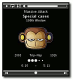

Remuco
Archivierte Anleitung
Dieser Artikel wurde archiviert, da er - oder Teile daraus - nur noch unter einer älteren Ubuntu-Version nutzbar ist. Diese Anleitung wird vom Wiki-Team weder auf Richtigkeit überprüft noch anderweitig gepflegt. Zusätzlich wurde der Artikel für weitere Änderungen gesperrt.
Zum Verständnis dieses Artikels sind folgende Seiten hilfreich:
Remuco  ist ein Programm, das es erlaubt, ein Handy oder ein anderes Mobilgerät als Fernsteuerung für Programme zu benutzen, die auf einem Rechner ablaufen. Remuco ist vergleichbar mit AnyRemote. Remuco kann eine Vielzahl von Medienplayern, wie z.B. Amarok oder VLC, steuern.
ist ein Programm, das es erlaubt, ein Handy oder ein anderes Mobilgerät als Fernsteuerung für Programme zu benutzen, die auf einem Rechner ablaufen. Remuco ist vergleichbar mit AnyRemote. Remuco kann eine Vielzahl von Medienplayern, wie z.B. Amarok oder VLC, steuern.
Im März 2014 wurde bekannt gegeben, dass Remuco nicht mehr weiterentwickelt wird. Es gibt also keinerlei Updates und Behebungen von Fehlern und Sicherheitslücken mehr.
Vorbereitung¶
Das Mobiltelefon muss mittels Bluetooth oder WLAN mit dem Rechner kommunizieren können. Die entsprechende Verbindung wird für die weitere Anleitung vorausgesetzt. Außerdem muss das Mobiltelefon Java-Programme (MIDP ≥ 2.0, CLDC ≥ 1.1) ausführen können. Falls eine Bluetoothverbindung verwendet wird, muss das Mobiltelefon zusätzlich JSR-82 (Java Bluetooth) unterstützen. Eine Liste mit erfolgreich getesteten Geräten hilft bei der Frage, ob das eigene Smartphone geeignet ist.
Voraussetzungen¶
Für die Datenübertragung zwischen Rechner und Mobiltelefon wird das folgende Programm benötigt [1]:
python-bluez (universe - für Verbindungen über Bluetooth)
 mit apturl
mit apturl
Paketliste zum Kopieren:
sudo apt-get install python-bluez
sudo aptitude install python-bluez
Installation¶
Remuco ist in den offiziellen Paketquellen verfügbar und lässt sich daher leicht installieren [1]. Die folgenden Pakete stehen zur Auswahl:
remuco-base (universe - Grundprogramm inklusive der Clientdatei remuco.jar für das Mobiltelefon)
mit apturl
Paketliste zum Kopieren:
sudo apt-get install remuco-base
sudo aptitude install remuco-base
Optional sind - je nach Audioplayer:
remuco-audacious (universe - Steuerung von Audacious)
remuco-xmms2 (universe - Steuerung von XMMS2)
remuco-banshee (universe - Steuerung von Banshee)
remuco-mpd (universe - Steuerung von MPD)
remuco-tvtime (universe - Steuerung von tvtime)
remuco-vlc (universe - Steuerung von VLC)
remuco-amarok (universe - Steuerung von Amarok 2)
remuco-totem (universe - Steuerung von Totem)
remuco-mplayer (universe - Steuerung von MPlayer)
remuco-exaile (universe - Steuerung von Exaile)
remuco-gmusicbrowser (universe - Steuerung von Gmusicbrowser)
remuco-okular (universe - Steuerung von Okular)
remuco-quodlibet (universe - Steuerung von Quod Libet)
mit apturl
Paketliste zum Kopieren:
sudo apt-get install remuco-audacious remuco-xmms2 remuco-banshee remuco-mpd remuco-tvtime remuco-vlc remuco-amarok remuco-totem remuco-mplayer remuco-exaile remuco-gmusicbrowser remuco-okular remuco-quodlibet
sudo aptitude install remuco-audacious remuco-xmms2 remuco-banshee remuco-mpd remuco-tvtime remuco-vlc remuco-amarok remuco-totem remuco-mplayer remuco-exaile remuco-gmusicbrowser remuco-okular remuco-quodlibet
Mobiltelefon¶
Wenn das alles geklappt hat, muss man in einem letzten Schritt noch dafür sorgen, dass auch auf dem Mobiltelefon die Remuco-Software installiert ist. Wurde Remuco aus den offiziellen Paketquellen installiert, kopiert man die Datei /usr/share/remuco/client/midp/remuco.jar auf das Mobiltelefon. Dies kann entweder per USB oder auch per Bluetooth geschehen.
Hinweis:
Es kann vorkommen, dass man die Datei auf dem Handy zunächst suchen muss. Bei einem Nokia 5310 wird sie bspw. im Ordner Spiele abgelegt.
Inbetriebnahme¶
Zuerst startet man auf dem Rechner den Medienplayer, der per Handy gesteuert werden soll. Im nächsten Schritt startet man Remuco über das Terminal [5]. Bei Bedarf kann auch ein Menüeintrag zum Starten von Remuco angelegt werden [6]. Beispielsweise wird über den Befehl remuco-amarok das Programm zur Steuerung von Amarok 2 gestartet (falls man das entsprechende Remuco-Paket installiert hat).
Nachdem man Bluetooth bzw. WLAN auf dem Rechner und dem Handy aktiviert hat (bei beiden Geräten sollte die Option "sichtbar" aktiviert sein), startet man das Programm, das man auf das Mobiltelefon kopiert hat. Zu Beginn wählt man aus, wie das Handy mit dem Rechner verbunden ist (Bluetooth oder WLAN). Im Idealfall findet der Remuco-Client auf dem Mobiltelefon den Rechner automatisch und kann zum Verbinden ausgewählt werden. Alternativ kann man auch versuchen eine manuelle Verbindung herzustellen. Nachdem die Verbindung zum Rechner hergestellt ist, kann nun der Medienplayer über das Mobiltelefon gesteuert werden.
Remuco automatisch starten¶
Falls man Remuco nicht nach jedem Systemstart manuell starten möchte, kann man remuco-PLAYER ("PLAYER" ist wieder durch den gewünschten Medienplayer zu ersetzen) zum Autostart hinzufügen. Wenn der Medienplayer nicht läuft, befindet sich Remuco im "Schlafmodus" und verbraucht nicht viele Ressourcen. Wie man ein Programm automatisch nach dem Anmelden an der grafischen Oberfläche starten kann, wird im Artikel Autostart beschrieben.

Bedienung¶
Über "Menu -> Options" gibt es einige Möglichkeiten, das Aussehen von Remuco auf dem Mobiltelefon anzupassen. Beispielsweise können verschiedene Themes gewählt oder die Größe der angezeigten Cover verändert werden. "Menu -> Key Bindings" zeigt die aktuelle Tastenbelegung zur Steuerung des Medienplayers, zusätzlich kann die Belegung der Tasten an die eigenen Bedürfnisse angepasst werden.
Falls dies der Medienplayer unterstützt, kann über den Menüpunkt "Media" auf die Wiedergabeliste des Players zugegriffen werden. "Media -> Playlist" zeigt die aktuelle Wiedergabeliste an und es können Musikstücke aus der Liste entfernt werden. Über den Menüpunkt "Media -> Files" kann auf das Dateisystem des Rechners zugegriffen werden. Damit ist es möglich Musiktitel vom Rechner zur Wiedergabeliste hinzuzufügen.
Tastenbelegung¶
Die voreingestellte Tastenbelegung zur Steuerung eines Medienplayers ist in der folgenden Tabelle abgebildet:
| Remuco | |
| Taste(n) | Funktion |
| 1 | Cover vergrößert anzeigen |
| 2 | Lautstärke erhöhen |
| 3 | Vollbildmodus de/aktivieren (nicht von jedem Handy unterstützt) |
| 4 | Vorheriger Titel |
| 5 | Wiedergabe/Pause |
| 6 | Nächster Titel |
| 7 | Wiedergabeliste wiederholen/nicht wiederholen |
| 8 | Lautstärke verringern |
| 9 | Zufällige Wiedergabe de/aktivieren |
| 0 | Lautstärke stumm schalten |
| * | Titelbewertung verringern |
| # | Titelbewertung erhöhen |
Problembehebung¶
Eventuell müssen für bestimmte Medienplayer zusätzliche Einstellungen vorgenommen werden, damit Remuco verwendet werden kann. Beispielsweise muss zur Steuerung von VLC dessen D-Bus-Kontrollinterface aktiviert werden. Dies geschieht in VLC über "Extras -> Einstellungen", "Einstellungen zeigen -> Alle", "Interface -> Kontrollinterfaces -> D-Bus-Kontrollinterface". Benötigte Anpassungen für andere Medienplayer werden auf der Remuco-Hilfeseite aufgeführt.
- Erstellt mit Inyoka
-
 2004 – 2017 ubuntuusers.de • Einige Rechte vorbehalten
2004 – 2017 ubuntuusers.de • Einige Rechte vorbehalten
Lizenz • Kontakt • Datenschutz • Impressum • Serverstatus -
Serverhousing gespendet von